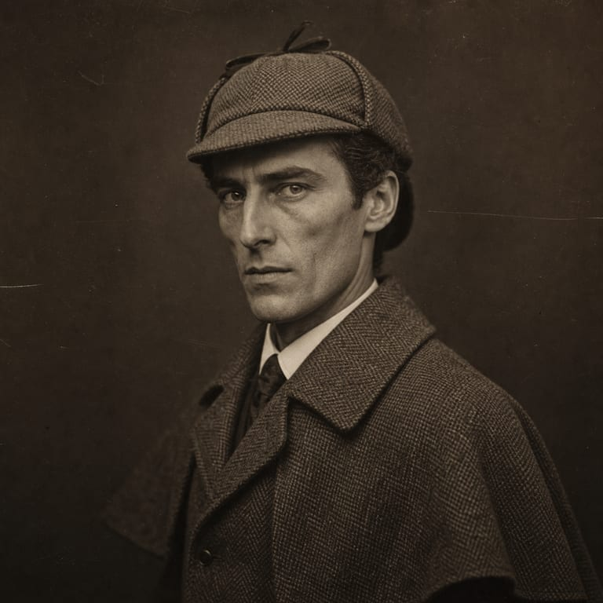
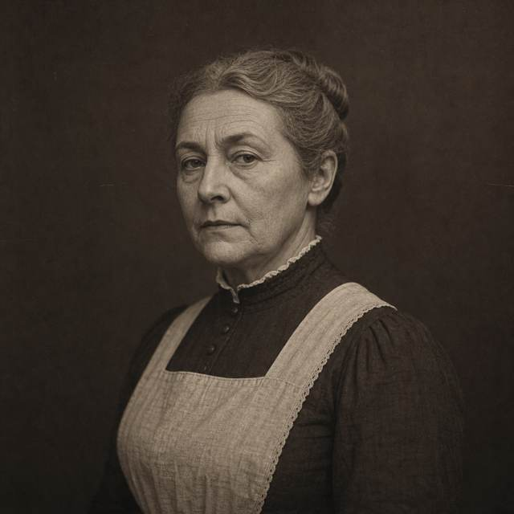
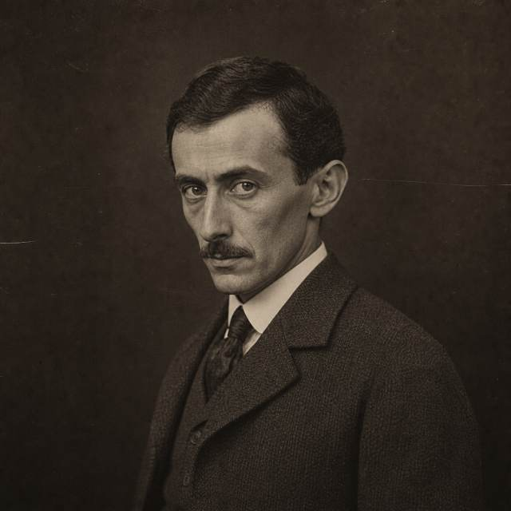
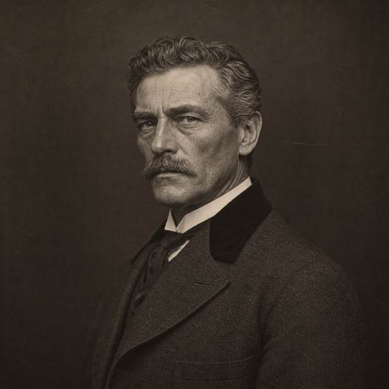
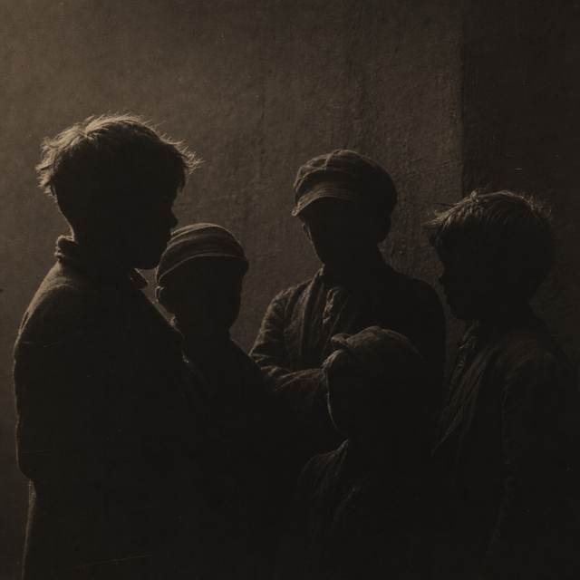

CASE FILE
No. 001

シャーロック・ホームズ
Sherlock Holmes
- 職業
- 諮問探偵
- 住所
- ロンドン ベイカー街221B
- 初登場
- 緋色の研究（1887年）
世界で唯一の「諮問探偵」を名乗る。警察や私立探偵が行き詰まった事件に助言を与える職業を、自ら定義して始めた人物。観察と推理を武器とし、ヴァイオリンを弾き、化学実験を好む。
SECTION 01
09 FILES
CASE FILE
No. 001

Sherlock Holmes
世界で唯一の「諮問探偵」を名乗る。警察や私立探偵が行き詰まった事件に助言を与える職業を、自ら定義して始めた人物。観察と推理を武器とし、ヴァイオリンを弾き、化学実験を好む。
CASE FILE
No. 002
John H. Watson
元軍医。アフガニスタンでの従軍から負傷して帰国し、下宿を探していたところでホームズと出会い、221Bを共同で借りることになる。正典のほとんどは、このワトスンが書いた記録という体裁をとっている。
CASE FILE
No. 003

Mrs. Hudson
ベイカー街221Bの家主。奇妙な訪問者や銃声、化学実験の臭いに耐えながら、下宿人であるホームズとワトスンの生活を支える。
CASE FILE
No. 004
Mycroft Holmes
ホームズの7歳年上の兄。推理の才ではホームズを上回るとされるが、自ら足を運んで調べることを好まない。ディオゲネス・クラブの創立者の一人。
CASE FILE
No. 005

Inspector Lestrade
ロンドン警視庁（スコットランドヤード）の警部。正典に最も多く登場する警察官。実直で粘り強いが、目に見える事実の先を読む想像力に欠ける。
CASE FILE
No. 006
Professor James Moriarty
ホームズが「犯罪界のナポレオン」と呼ぶ人物。元は数学の教授であり、ロンドンの犯罪の多くを背後から統括しているとされる。「最後の事件」でホームズと対決する。
CASE FILE
No. 007
Irene Adler
「ボヘミアの醜聞」に登場する女性。ホームズの計略を見破って出し抜いた。ワトスンによれば、ホームズは彼女をつねに「あの女性（the woman）」と呼んだ。
CASE FILE
No. 008

Colonel Sebastian Moran
モリアーティの組織で最も危険とされた人物。優れた狙撃手であり、「空き家の冒険」でホームズが仕掛けた罠にかかる。
CASE FILE
No. 009

The Baker Street Irregulars
ホームズが雇うロンドンの浮浪児たちの集団。大人が入り込めない場所を歩き回り、街の情報を集めてくる。
SECTION 02 — NOTE
シャーロック・ホームズの物語は、長編4作と短編56作の計60作からなる。これらは「正典（Canon）」と呼ばれ、後世に書かれた無数の翻案と区別される。本ページが扱うのはこの60作のみである。